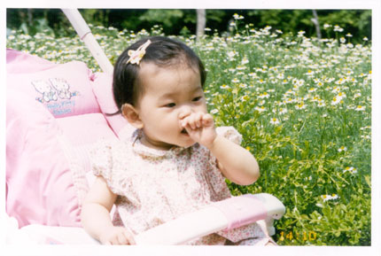
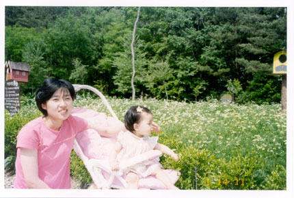
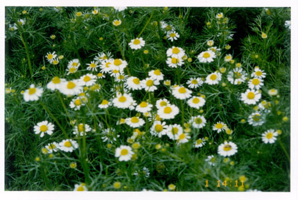
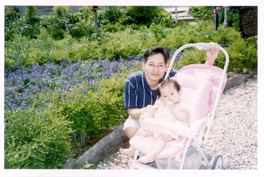
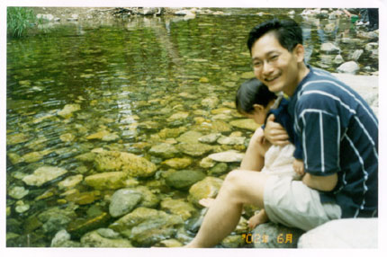
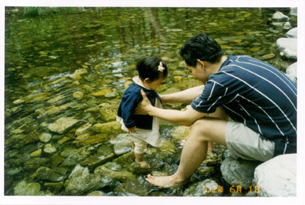
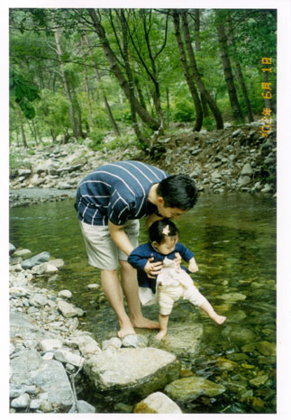
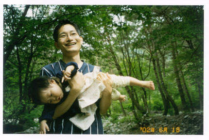

2002년
6월 |
6월이 되니 땀이 납니다.
엄마가 좋아하는 여름! 겨울을 기다리는 아빠! 자~ 서연이와 떠나봅시다.6월
첫 주에는 강원도에 갔습니다.
아직 피지 않은 메밀꽃 봉평을 거쳐 평창 허브나라로~
서연이의 첫 강원도 여행! |
|
허브 산책로에서 "킁킁" 모든 풀에는 향기가
있습니다.
서연이 손에 집에 있는 라벤다 잎이 많이 떨어졌답니다 ^^
|
 |
|
|
 |
|
카모마일 마른꽃으로 차를 우려서 마시지요.
신경 안정에 좋답니다. 차 향기와는 달리 지릿한 향이 나더군요. |
 |
| |
 |
| |
 |
|
허브나라 옆 봉정계곡. - 차가운 물에 머뭇거리는
서연! |
 |
|
"첨벙첨벙" - 재밌어하는 서연! |
 |
|
"그만 가자." "한번만 더 담그구요~"
첨범첨벙 물도 튀기고 깊은 곳으로 겁없이 들어가려 해 옷이 많이 젖었습니다.
- 아쉬워하는 서연 |
 |
|
결국은... - 입 나온 서연 |
 |
|
[후기] |
하루 짧은 일정에 아쉬움이 남습니다.
9월 메밀꽃 필 무렵 다시 찾기로 하고 집으로 향합니다. |